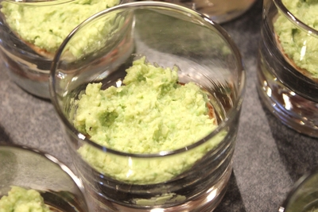
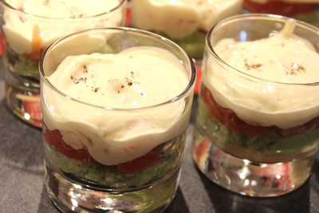
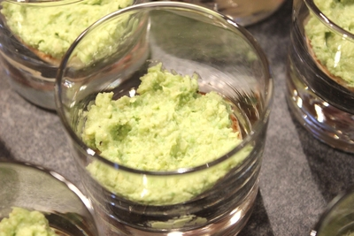
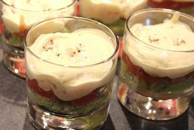
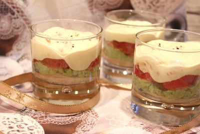
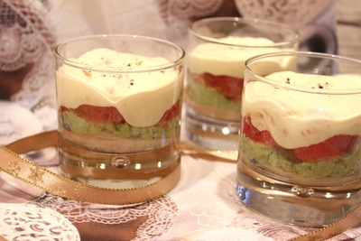

Recettes de cuisine (tout sur une seule page)
Recettes
- Recettes de cuisine (tout sur une seule page)
- Aubergine gratinée à la Bolognaise
- Bouillon asiatique aux vermicelles et bœuf
- Bricks de chèvre
- Bûche aux marrons glacés
- Bûche de Noël
- Cake au citron
- Choux-fleurs à la crème
- Choux rouge aux châtaignes
- Choux
- Chutney d'oignons
- Clafoutis de jambon et courgette
- Concombre au fromage blanc
- Crevettes Kung Pao aux cajous
- Croque-monsieur
- Crumble de potiron au Comté et bacon
- Dômes de saumon fumé
- Flan noix de coco
- Galette des rois
- Gâteau à la crème de marron
- Gâteau au chocolat crème de marron
- Gâteau marbré
- Goulache
- Gratin Dauphinois
- Gratin de côtes de blettes
- Lasagnes
- Lentilles saucisses
- Lotte à l'armoricaine
- Meringues
- Mini clafoutis au camembert
- Œufs à la neige
- Osso-Bucco au fenouil
- Panna cotta
- Paprikás krumpli
- Pommes de terre jambon feta
- Pommes de terre saumon
- Porc à la noix de coco
- Poulet au citron et aux olives
- Poulet légumes
- Riz aux crevettes et noix de pétoncle
- Riz aux oignons (cuisson pilaf)
- Rôti de magrets de canard au potimarron et aux marrons
- Sauce béchamel
- Sauté de porc à la crème de moutarde
- Soufflé au citron
- Spaghetti à la Carbonara
- Spaghetti bolognaise
- Taboulé
- Tarte au citron meringuée
- Tarte aux champignons mozzarella
- Tarte fine au boudin blanc et chutney de mangue
- Tartiflette
- Tatins de navets
- Tiramisu au saumon fumé, avocat et pamplemousse rose
- Tiramisu
Aubergine gratinée à la Bolognaise
Pour 1 personne
(Fait en avril 2014)
- Faire revenir dans une poêle recouverte d'une feuille de cuisson 1 aubergine coupée en fines lamelles, jusqu'à ce qu'elle devienne tendre (7 minutes).
- Réserver l'aubergine.
- Faire fondre 1 oignon dans la poêle, saisir 1 steak haché émietté, ajouter 1/2 boîte de tomates en dés, 1 c. à s. de concentré de tomates, 1 c. à s. de vin blanc, 1/2 gousse d'ail haché et 1 bouquet garni. Ajouter un peu d'eau si nécessaire.
- Saler et poivrer.
- Laisser mijoter 20 minutes.
- Mélanger 30 g de ricotta et 2 c. à s. de crème fraîche.
- Disposer l'aubergine dans un plat à gratin, ajouter la viande, puis ajouter le mélange à la ricotta, enfin napper de gruyère râpé (15 g).
- Faire gratiner au four à 180 °C pendant 20 minutes.
- Servir chaud.
Bouillon asiatique aux vermicelles et bœuf
Pour 2 personnes
(Fait en mai 2014)
Émincer 80 g de rumsteck de bœuf en très fines lanières et les faire mariner avec les 4 épices (1 c. à c.) et 1 c. à s. de sauce soja, réserver.
Possible aussi avec des aiguillettes de canard.
Mettre dans une casserole le gingembre émincé (1 morceau de 2 cm, frais), l'ail haché (2 gousses) et 1 poivron rouge coupé en petits morceaux.
Verser 70 cl d'eau, 2 c. à s. de sauce soja, 2 étoiles de badiane et 3 c. à c. de graines de coriandre concassées.
Ajouter du bouillon.
Ajouter des brins de ciboules (3) émincés.
Ajouter le bouquet garni.
Laisser frémir.
Faire cuire les vermicelles de riz crus (60 g) en les recouvrant d'eau chaude pendant 5 minutes.
Quand les vermicelles sont presque cuits, ôter la casseroles du feu, enlever le bouquet garni, ajouter le bœuf, mélanger et couvrir pendant 2 minutes.
Égoutter les vermicelles, y ajouter la soupe, servir.
Bricks de chèvre
Pour 4 personnes
(Fait début 2014)
- Découper le fromage de chèvre frais (120 g) en 8 rondelles
- Déposer chaque rondelle de fromage de chèvre dans une demi feuille de brick (il faut donc 4 feuilles de brick)
- Ajouter du basilic ciselé et un peu de poivre
- Replier la feuille de brick
- Badigeonner chaque brick d'huile d'olive
- Faire dorer les bricks au four à 180 °C pendant environ 5 minutes (surveiller)
- Servir avec une salade
Bûche aux marrons glacés
Pour 6 personnes
(Fait en décembre 2019)
- Portez à ébullition 10 cl d'eau avec 50 g de sucre. Ajouter 2 c. à s. de whisky dans ce sirop.
- Fouettez 4 jaunes d'œufs avec 150 g de sucre.
- Ajoutez 100 g de farine.
- Montez en neige les blancs des 4 œufs, les ajouter au mélange.
- Cuisez 10 min. sur du papier sulfurisé beurré, à 180 °C. Le mélange doit être étalé sous forme d'un rectangle, aussi long que le moule à cake et trois fois plus large.
- Une fois retourné sur un linge, taillez le biscuit et découpez-le en trois, aux dimensions du moule à cake.
- Imbibez le biscuit de sirop de whisky.
- Faites fondre 6 g de gélatine en feuilles (préalablement hydratée et essorée) avec 3 c. à s. de mascarpone sur feu doux.
- Fouettez 250 g de mascarpone (un peu moins : les 3 c. à s. en ont été prélevées) avec 250 g de crème de marrons.
- Ajoutez la gélatine.
- Faites monter en chantilly 15 cl de crème liquide et ajoutez au mélange.
- Tapissez le moule d'un film.
- Placez un rectangle de biscuit puis du mélange, et ajoutez des brisures de marrons. Au total, il faut 100 g de brisures de marrons glacés.
- Recommencez à deux reprises, terminez par du biscuit.
- Réfrigérez au moins 6h.
- Pour le glaçage
- Démoulez la bûche et placez-la sur une grille.
- Faites chauffer 12 cl de crème liquide.
- Ajoutez 120 g de chocolat noir haché.
- Ajoutez 30 g de beurre.
- Étalez sur la bûche.
- Décorez avec des marrons glacés.
- Conservez au réfrigérateur.
Bûche de Noël
D'après http://www.iletaitunefoislapatisserie.com/2016/12/buche-noel-roulee-chocolat-facile-rapide.html
Pour 10 personnes
Ingrédients
Pour le biscuit roulé
- 4 œufs
- 120 g de sucre
- 80 g de farine
- 40 g de poudre de noisette
Pour la ganache
- 250 g de chocolat noir
- 250 g de crème liquide (de la crème entière est meilleure)
- 50 g de beurre
Recette
Ganache
- Faire fondre 250 g de chocolat noir au micro-ondes ou au bain-marie. En parallèle, faire chauffer la crème liquide.
- Verser 250 g de crème liquide bouillante sur le chocolat fondu en trois fois, en mélangeant bien entre chaque ajout.
- Ajouter 50 g de beurre en morceaux et mélanger pour le faire fondre.
- Laisser refroidir et mettre au réfrigérateur. Pour éviter que la partie supérieure ne forme une croute, poser un film transparent dessus.
Biscuit roulé
- Séparer le blanc des jaunes de 4 œufs.
- Faire blanchir les jaunes avec 120 g de sucre.
- Faire monter les blancs.
- Ajouter les blancs à la préparation, délicatement.
- Ajouter délicatement 80 g de farine.
- Ajouter délicatement 40 g de poudre de noisette. La recette originale insiste sur le fait que la poudre de noisette doit être tamisée. Personnellement, j'ai fait cette recette avec de la poudre de noisette faite à partir de noisettes entières (donc, assez grossière) et cela n'a pas posé de problème.
- Verser la pâte sur une plaque de cuisson rectangulaire, sur du papier cuisson. Lisser avec une spatule.
- Faire cuire 10 min au four, à 180 °C.
- Comme indique le site : "Le biscuit est cuit quand il est coloré et que le dessus ne colle plus au doigt". Il est important de ne pas trop faire cuire, pour que le biscuit ne casse pas durant le roulage.
- Dès la sortie du four, retourner la plaque sur un torchon humide. Pour avoir un torchon humide : passer un torchon sous l'eau et l'essorer.
- Rouler tout de suite le gâteau avec le torchon.
- Laisser refroidir une dizaine de minutes.
Montage
- Quand la ganache a bien refroidi : étaler la ganache sur le biscuit préalablement déroulé. Garder de la ganache pour en recouvrir ensuite la bûche.
- Rouler de nouveau.
- Couper un bout de biscuit de 2 cm environ, et le poser sur la bûche.
- Recouvrir la bûche de ganache.
- Strier la ganache avec une fourchette.
- Laisser au réfrigérateur au moins 1 h avant de servir (peut aussi être fait la veille).
- Il est possible de décorer la bûche avec du sucre glace.
Cake au citron
D'après http://cuisine.journaldesfemmes.com/recette/311322-cake-au-citron
Pour 8 personnes
Ingrédients
- 200 g de farine
- 150 g de sucre
- 1/2 sachet de levure chimique
- 4 œufs
- 100 g de beurre
- 1 citron, non traité de préférence
Recette
- Faire fondre 100 g de beurre au micro-ondes ou au bain-marie.
- Râper le citron et le presser, récupérer le jus.
- Mélanger 200 g de farine, 150 g de sucre, 1/2 sachet de levure chimique.
- Ajouter au mélange 4 œufs un par un.
- Ajouter au mélange le beurre fondu.
- Ajouter au mélange le zeste et le jus de citron.
- Verser le mélange dans un moule à cake d'environ 30 cm, beurré et fariné.
- Faire cuire au four à 180 °C, pendant 40 min.
- Dès que le cake est démoulé, le mettre sur le plat de service.
Choux-fleurs à la crème
Pour 4 à 6 personnes
- Faire bouillir de l'eau dans une marmite.
- Découper un gros choux-fleur (enlever les parties blanches près du cœur) et laver les parties découpées.
- Une fois que l'eau bout, y verser le choux-fleur, couper le feu, attendre entre 5 et 10 minutes (plus près de 10), puis égoutter.
- Mettre une brique de crème dans une marmite (20 cl), ajouter un bouillon, faire chauffer doucement.
- Verser le choux-fleur, laisser à feu doux quelques minutes.
Choux rouge aux châtaignes
Pour 6 ou 8 personnes
- Préparer 500 g de châtaignes en les ébouillantant 5 à 10 minutes puis en les épluchant - il faut enlever les 2 peaux.
- Découper un gros choux rouge et le mettre dans de l'eau bouillante.
- Quand l'eau bout à nouveau, couper le feu, mettre un couvercle et laisser 30 minutes.
- Faire fondre (pas dorer) un oignon dans de l'huile chaude.
- Découper 2 grosses pommes en 4 chacune.
- Mettre la moitié du choux dans le plat où les oignons viennent de fondre, mettre les châtaignes et les pommes, mettre le reste du choux.
- Saler, poivrer et ajouter 1 c. à c. de sucre.
- Arroser d'1 c. à s. de vinaigre.
- Mettre 30 cl de vin rouge (recette originale). Moi je mets du vin blanc, ça fonctionne aussi.
- Mettre 1 verre d'eau.
- Laisser mijoter 2h à 3h.
Choux
Pour 20 choux environ
- Verser dans 1 casserole 25 cl d'eau, 60 g de beurre coupé en morceaux, 1/2 cuillère à café de sel et 1 cuillère à soupe de sucre.
- Porter à ébullition.
- Lorsque l'eau bout, verser 150 g de farine tamisée et remuer énergiquement avec une spatule. Une boule de pâte se forme en se détachant de la casserole.
- Si cela ne se produit pas, remuer sur feu très doux puis sécher la pâte jusqu'à ce qu'elle se détache des parois.
- Hors du feu, incorporer 4 œufs entiers, l'un après l'autre. Mélanger parfaitement chaque œuf, avant le suivant. Ce point est très important.
- Si la pâte est trop sèche, ajouter 1/2 jaune d'œuf.
- Faire les choux, avec deux cuillères à soupe pour former une boule.
- Espacer les choux suffisamment sachant qu'ils gonflent un peu à la cuisson.
- Cuisson : 210 °C pendant 20 minutes, variable selon la taille des choux.
Chutney d'oignons
D'après http://www.evacuisine.fr/archives/2011/11/23/22690660.html
Pour 1 pot de confiture
Ingrédients
- 6 gros oignons
- 100 g de sucre en poudre
- 4 c. à s. de vinaigre balsamique
- 1 c. à s. d'huile d'olive.
Recette
- Éplucher 6 gros oignons et les émincer finement.
- Faire revenir les oignons dans 1 c. à s. d'huile d'olive jusqu'à ce qu'ils deviennent translucides.
- Saupoudrer avec 100 g de sucre en poudre.
- Verser 4 c. à s. de vinaigre balsamique.
- Remuer et laisser cuire 10 min à feu vif jusqu'à ce que le vinaigre s'évapore.
- Couvrir la casserole et laisser cuire à feu très doux pendant 1 h. Remuer de temps en temps.
- Verser le confit d'oignons bouillant dans un pot à confiture.
- D'après le site, il est possible de le préparer 1 mois à l'avance, car il se conserve très bien.
Clafoutis de jambon et courgette
Pour 6 personnes
- Couper des courgettes non épluchées (500 g) en bâtonnets
- Dans une poêle, faire chauffer de l'huile et y verser les courgettes, du thym et 1 gousse d'ail haché
- Cuire pas trop vite, une fois que c'est cuit, saler et poivrer
- Battre 4 œufs en omelette, y verser 120 g de farine, saler et poivrer
- Verser 20 cl de lait lentement, tout en mélangeant au fouet
- Ajouter 12 olives noires dénoyautées coupées en 2
- Ajouter du basilic ciselé
- Étaler les courgettes dans une tourtière, y verser la préparation, ajouter 8 fines tranches de jambon de Bayonne (160 g)
- Faire cuire au four 40 minutes à 210 °C
- Servir tiède ou froid
Concombre au fromage blanc
Pour 2 ou 3 personnes
- Couper une gousse d'ail très fin, et de la ciboulette.
- Mettre un fromage blanc de 100 g dans le plat de service, y ajouter l'ail et la ciboulette.
- Y couper un concombre en petits morceaux. Au besoin, ôter du concombre la partie centrale (pleine de pépins.)
- Saler, poivrer.
Crevettes Kung Pao aux cajous
Pour 6 personnes
- Mélanger les ingrédients suivants.
- Gingembre, 1/2 c. à c. haché
- Ail, 1 c. à c. haché
- Maïzena, 1,5 c. à s.
- Bicarbonate de soude, 1/4 de c. à c.
- Sel
- Poivre
- Sucre, 1/4 de c. à c.
- Mélanger avec les crevettes fraîches, 450 g.
- Laisser reposer 20 minutes.
- Faire chauffer de l'huile dans un wok, y faire sauter les crevettes pendant 1 minute, à feu vif, ou jusqu'à ce qu'elles changent de couleur. Verser dans une assiette.
- Mettre un petit oignon coupé en dés dans le wok, faire cuire 1 minute.
- Y ajouter (dans le wok) des courgettes, 1 grosse ou bien 2 petites, coupée(s) en cubes et un poivron rouge coupé en cubes. Prolonger la cuisson 30 secondes.
- Mélanger les ingrédients suivants pour faire une sauce, dans un récipient à part.
- 20 cl de bouillon de volaille
- 1 c. à s. de maïzena
- 2 c. à c. de sauce chili (Tabasco)
- 2 c. à c. de pâte de haricots (facultatif)
- 2 c. à c. d'huile de sésame
- 1 c. à s. de Xérès ou alcool de riz
- Verser cette sauce dans le wok
- Faire épaissir légèrement, en remuant constamment
- Ajouter les crevettes
- Ajouter les noix de cajou, 60 g, et faire réchauffer complètement
Accompagner avec un riz blanc ou frit.
J'ai fait cette recette sans bicarbonate de soude ni pâte de haricots ni Xérès ni alcool de riz ni huile de sésame, et ça fonctionne.
Croque-monsieur
Deux sandwiches par personne
L'idéal est de les faire dorer avec un appareil à gaufres, mais le four est aussi une solution.
Beurrer sur la partie extérieure deux tranches de pain de mie.
A l'intérieur, mettre au choix :
- Du jambon et du gruyère.
- De la moutarde et des saucisses (type knack.)
Passer dans l'appareil à gaufre jusqu'à ce que l'extérieur soit doré, sinon passer au four très chaud.
Crumble de potiron au Comté et bacon
Pour 6 personnes
(Fait en décembre 2014)
- Éplucher un potiron d'1 kg et le découper en gros morceaux.
- Faire cuire les morceaux de potiron à la vapeur 10 à 15 minutes. Le potiron doit pouvoir être écrasé avec une fourchette.
- Émincer 2 feuilles de sauge.
- Émincer finement 2 oignons et les faire revenir longuement (en y ajoutant la sauge ?)
- Pour le crumble
- Mélanger grossièrement 150 g de farine et 80 g de beurre pommade.
- Saler.
- Mélanger avec 80 g de Comté râpé.
- Ciseler 100 g de bacon en fines lanières.
- Verser dans un plat, dans cet ordre :
- Les oignons
- Ajouter la sauge (ou bien l'ajouter à l'oignon pendant sa cuisson ?)
- Les morceaux de potiron écrasés grossièrement avec une fourchette
- Le bacon
- 1 c. à s. de crème fraîche épaisse
- 100 g de Comté râpé
- Le crumble
- Faire cuire au four
- 20 minutes
- 180 °C
Dans la recette originale, les potirons sont cuits au four pendant 30 à 40 minutes ou plus (jusqu'à 1 h si nécessaire), avec les oignons et la sauge.
Dômes de saumon fumé
Pour 6 dômes
Fait en décembre 2015
- Dans un saladier, écraser 2 barquettes de fromage de chèvre frais (style Chavroux) mélangé à 1 c. à s. de crème fraîche.
- Ajouter 1 échalote finement ciselée.
- Ajouter 3 c. à s. de ciboulette hachée.
- Saler, poivrer et ajouter quelques baies roses préalablement écrasées.
- Réserver au frais.
- Couper un gros poivron rouge en tous petits dés.
- Faire chauffer de l'huile d'olive dans une sauteuse et y faire compoter le poivron pendant une dizaine de minutes (recette originale), dans la pratique cela m'a pris plutôt 20 minutes.
- Saler, poivrer, égoutter puis laisser refroidir les poivrons.
- Déposer les saumons fumés (6 tranches) dans 6 alvéoles "demi-sphère".
- Au besoin, prendre des coupelles ou ramequins et recouvrir de cellophane.
- Répartir le fromage frais dans les alvéoles puis ajouter les poivrons.
- Replier les tranches de saumon sur le dessus de façon à recouvrir la farce au fromage.
- La recette originale recommande de mettre 1h au congélateur pour faciliter le démoulage.
- Ce que j'ai fait : utilisation systématique de cellophane, stockage dans le réfrigérateur et "démoulage" au moment du dressage.
- Décorer sur le dessus avec du persil ou de la ciboulette.
Flan noix de coco
Il s'agit du flan à la noix de coco de Béa...
Pour 4 à 6 personnes
(Refait en décembre 2014)
- Mélanger :
- 397 g de lait concentré sucré
- 125 g de noix de coco râpée
- 4 œufs
- 300 ml de lait frais
- Faire cuire au four
- 45/50 minutes
- 180 °C
Galette des rois
Pour 6 personnes
La galette des rois est constituée de deux pâtes feuilletées, et d'une crème d'amende pour fourrer entre les deux.
- Crème d'amende
La crème d'amende ci-dessous remplira la galette. Certaines recettes mélangent une crème d'amende avec de la crème pâtissière pour obtenir une frangipane classique. Je trouve que la crème d'amende seule est suffisante.
- Prendre 125 g de beurre à température ambiante et le faire blanchir avec 125 g de sucre en poudre.
- Y ajouter 125 g de poudre d'amende et mélanger tranquillement, pas trop fort, pas trop longtemps.
- Y verser 125 g d'œufs (blanc et jaune) en mélangeant après chaque œuf. 125 g d'œufs correspondent à deux œufs.
- Ajouter 30 g de farine.
- Ajouter un peu d'alcool, du rhum par exemple. La dernière fois j'ai mis une cuillère à soupe de rhum et ce n'était pas suffisant => ajouter deux ou trois cuillères à soupe d'alcool. Mélanger.
On peut aussi ajouter un peu d'extrait d'amende amère. Si ce n'est pas pour une utilisation immédiate, recouvrir de film plastique et mettre au réfrigérateur.
- Recette pour 1 pâte feuilletée
- Prendre 200 g de farine, y faire un puits, y mettre une pincée de sel, éventuellement deux ou trois cuillères à soupe de sucre, y verser 10cl d'eau pas trop froide, mélanger, mettre le pâton au réfrigérateur pendant 2h.
- Prendre 150 g de beurre à température ambiante (d'après une autre recette : la moitié du poids du pâton), l'entourer de film plastique et le battre très fort avec le rouleau à pâtisserie pour le ramollir.
- Étaler le pâton, y poser le beurre au milieu, replier la pâte dessus en collant bord à bord pour que le beurre soit complètement recouvert.
- Étaler pour obtenir une bande trois fois plus haute que large, replier le tiers du bas vers le haut, et recouvrir le tiers du haut sur le tout, bien souder les bords, tourner de 90°.
- Recommencer cette opération : étaler pour obtenir une bande trois fois plus haute que large, replier le tiers du bas et recouvrir en repliant le tiers du haut.
- À ce moment, 2 tours ont été faits. Il faut en faire 6. Les tours se font 2 par 2, séparés par au moins 20 minutes au réfrigérateur. Tourner de 90° entre chaque tour, toujours dans le même sens.
Si on résume : Après avoir "refermé" le pâton sur le beurre, on fait 2 tours, puis on met au réfrigérateur 20 minutes, puis deux tours, réfrigérateur 20 minutes, et enfin les deux derniers tours, la pâte feuilletée est prête à être étalée. Le temps de réfrigération entre les paires de tours peut être bien plus long (plusieurs heures.)
- Galette
- Étaler la première pâte feuilletée, verser la crème d'amende dessus, sans trop se rapprocher des bords.
- Mettre la fève, plutôt près du bord.
- Mettre la deuxième pâte (préalablement étalée) dessus, bien coller les bords.
- Faire des entailles à la pointe du couteau sur tout le pourtour de la galette.
- Faire des petits trous sur le dessus.
- Dessiner des motifs sur la galette, au couteau.
- Badigeonner de jaune d'œuf mélangé avec un peu d'eau (une goutte de lait dans certaines recettes.)
Cuisson : 30 minutes à 200°C.
Gâteau à la crème de marron
Pour 4 ou 6 personnes
- Faire fondre sur feu doux, 100 g de beurre et 500 g de crème de marron.
- Bien travailler l'appareil, ensuite ajouter 3 œufs, un par un, en mélangeant bien après chaque œuf.
- Verser dans un moule à génoise beurré.
- Cuisson : entre 30 et 40 minutes à 160 °C.
À essayer (non testé)
- Ajouter 20 g ou 30 g de farine ?
- Mettre un peu moins de crème de marron (400 g.)
À servir avec une crème anglaise et/ou une boule de glace, quand on mange le gâteau seul on a l'impression de manger de la crème de marron.
Gâteau au chocolat crème de marron
Pour 4 ou 6 personnes
(Fait plusieurs fois en 2014, dernière fois en février 2015)
- Faire fondre 100 g de chocolat noir et 100 g de beurre.
- Mélanger 3 œufs et les ajouter au mélange beurre chocolat.
- Ajouter 1 c. à s. de farine, mélanger.
- Ajouter 1 c. à s. de Maïzena, mélanger.
- Ajouter 1/2 c. à c. de levure chimique, mélanger.
- Ajouter 500 g de crème de marrons.
- Ajouter le zeste d'1 orange bio.
- Optionnel : ajouter 1/2 c. à c. de poivre de Sichuan.
- Beurrer et fariner un plat.
- Faire cuire le gâteau. 20 à 30 minutes à 180 °C.
Gâteau marbré
D'après http://www.marmiton.org/recettes/recette_gateau-marbre-recette-de-grand-mere_57729.aspx
Ingrédients
- 130 g de beurre
- 200 g de sucre
- 3 œufs
- 6 c. à s. de lait
- 200 g de farine
- 1 paquet de levure chimique
- 1 paquet de sucre vanillé
- 25 g de chocolat en poudre
Recette
- Faire blanchir 130 g de beurre avec 200 g de sucre.
- Séparer les blancs des jaunes de 3 œufs.
- Ajouter au mélange : les 3 jaunes, 6 c. à s. de lait, 200 g de farine et 1 paquet de levure chimique.
- Faire monter les blancs en neige.
- Ajouter les blancs montés en neige au mélange.
- Séparer la pâte en deux parties. Parfumer l'une à la vanille et l'autre au chocolat.
- Beurrer et fariner un moule à cake.
- Verser les deux préparations en alternance dans le moule.
- Faire cuire au four à 120-150 °C pendant 40 min.
Goulache
Pour 4 personnes
S'écrit aussi "goulash"
Ingrédients
- 800 g de bœuf
- Pour que la viande ne soit pas trop sèche, prendre une partie grasse, macreuse ou paleron.
- 300 g d'oignons (4 oignons)
- 1 kg de pommes de terre
- 1 poivron vert
- 20 g de paprika (4 c. à c.)
- 80 g de saindoux (sinon, huile d'olive)
- 1 tomate fraîche
- 40 cl de bouillon de bœuf
- 4 c. à s. de concentrée de tomates
- 2 c. à c. de fécule (maïzena ou sauceline)
Recette
Couper la viande en dés de 2 à 5 centimètres.
Couper les oignons et les faire blondir (pas dorer) dans le saindoux, dans une cocotte. Pour ma part je mets deux cuillères à soupe d'huile d'olive à la place du saindoux.
Ajouter la viande.
Lorsque la viande est dorée, ajouter le bouillon de bœuf, saler, poivrer.
Porter lentement à ébullition.
Pendant ce temps, mélanger dans un bol :
- 4 c.à s. de concentré de tomates
- 4 c.à c. de paprika
- 2 c.à c. de fécule (maïzena ou sauceline)
Délayer le mélange avec quelques cuillères à soupe de bouillon prélevé dans la cocotte.
Verser le mélange dans la cocotte et bien mélanger.
- Recette originale : couvrir et baisser le feu, laisser mijoter 1h45.
- Ce qu'il vaut mieux faire : fermer la cocotte et faire cuire à la vapeur au moins 20 minutes, puis laisser mijoter.
Éplucher et couper les pommes de terre en morceaux, pas trop petits.
Couper le poivron et la tomate
Au moins une demi-heure avant de servir, verser les pommes de terre, la tomate et le poivron dans la cocotte.
Gratin Dauphinois
Pour 6 personnes
(fait en décembre 2016)
- Cette recette vient principalement du site
- https://www.legratindauphinois.fr/
- Éplucher et couper en fines rondelles 800 g de pommes de terre.
- Éplucher une gousse d'ail et la frotter contre le bord du plat de cuisson.
- Beurrer le plat de cuisson.
- Déposer les pommes de terre dans le plat et régulièrement, alterner avec une couche de crème. Chaque couche doit être assaisonnée (sel, poivre, noix de muscade). 25 cl de crème au total.
- Ajouter 50 cl de lait.
- Cuisson : 2h30 à 3:00 à 150 °C.
Précisions :
- Cuisson : pour gagner du temps, le faire cuire 1h30 à 220 °C. Mais plus la gratin cuit longtemps, meilleur il est.
- Le liquide doit arriver à peu près à la moitié de la hauteur du plat. Au-delà, risque de débordement.
- Ail : j'ai tendance à en mettre aussi à la fin de chaque couche (à l'intérieur, pas seulement frotté sur les côtés), et au final, j'utilise 2 ou 3 gousses d'ail pour 1 kg de pommes de terre, en moyenne.
Gratin de côtes de blettes
Pour 4 personnes
- Prendre une certaine quantité de côtes de blettes.
- Faire cuire 10 minutes au fait-tout.
- Préparer une béchamel avec 30 à 50 cl de lait, autant de cuillères à soupe de Maïzena que de dl (4 cuillères pour 40 cl).
- Mélanger le tout dans un plat beurré.
- Cuisson au four 30 à 45 minutes à 200 °C.
Lasagnes
- Préparer une bolognaise liquide avec 600 g de viande hachée. Lien vers la recette de la sauce bolognaise : Lien1.
- Dans la bolognaise, verser 1 petite boîte de concentré de tomates (70 g) dilué dans un verre d'eau.
- Préparer une sauce béchamel avec 75 cl de lait. Lien vers la recette de la sauce béchamel : Lien2.
- Mettre le tout dans un grand plat beurré (plutôt carré ou rectangulaire), dans cet ordre et de bas en haut :
P, V, B, P, V, B, P, V (P = pâtes, V = viande, B = béchamel) Donc si vous avez bien suivi, on a dans le plat : V P B V P B V P
- Il est possible d'ajouter du gruyère râpé en cours de route, et à la fin pour gratiner un peu.
- Cuisson : au four pendant 45 minutes à 225 °C, vérifier à partir de 30 minutes.
Précision :
- Il faut s'arrêter à 1 cm du haut du plat pour éviter que cela ne déborde.
Lentilles saucisses
Pour 4 à 6 personnes
- Faire revenir 4 saucisses
- Une fois doré, y mettre un gros oignon.
- Une fois l'oignon devenu transparent, verser les lentilles, 400 g.
- Aussitôt verser de l'eau pour recouvrir. "Une certaine quantité".
- Assaisonner avec sel et poivre.
- Laisser cuire doucement pendant 30 à 45 minutes.
- Surveiller et remuer régulièrement, ajouter de l'eau si nécessaire
Lotte à l'armoricaine
D'après http://www.marieclaire.fr/cuisine/lotte-a-l-armoricaine,1246675.asp
Pour 6 personnes Temps de préparation : 30 minutes
- 800 g de queue de lotte coupé en tronçons de 5 cm
- 1 boîte de tomates concassées de 500 g
- 1 boîte de bisque de homard de 300 g
- 2 échalotes
- 2 gousses d'ail
- Le zeste d'une orange bio
- 2 cuil. à soupe de farine
- 20 cl de vin blanc sec
- 6 cuil. à soupe d'huile d'olive
- 3 cl de cognac
- 1 bouquet garni
- Sel et poivre
Étapes
- Épluchez et hachez les échalotes et l'ail. Dans une grande casserole, faites chauffer la moitié de l'huile d'olive. Faites-y revenir l'oignon et l'ail 3 min. Ajoutez le cognac et flambez.
- Ajoutez le vin blanc et laissez réduire aux 2/3. Versez les tomates concassées, la bisque, le bouquet garni, le zeste d'orange, un peu de sel et poivre. Laissez mijoter 20 min à feu doux.
- Faites chauffer le reste d'huile dans une poêle. Farinez les morceaux de lotte sur toutes les faces puis faites-les dorer dans la poêle 3 min environ jusqu'à ce que le poisson colore.
- Placez les morceaux de poisson dans la sauce armoricaine et laissez mijoter à petits bouillons durant 10 min. Servez bien chaud.
Accompagnez ce plat d'un mélange de riz sauvage ou de pommes de terre vapeur.
Meringues
4 œufs pour un grand saladier de meringues
Prendre un certain nombre d'œufs.
En général j'en prends 4, ça fait un grand saladier de meringues. 4 œufs ça passe tout juste avec une plaque de cuisson aux dimensions d'un four standard.
Séparer le blanc des jaunes.
- Les jaunes ne serviront pas. Penser à faire des spaghetti a la Carbonara !
- Sinon j'ai dans mes cartons une recette de crème au chocolat blanc qui utilise 4 jaunes d'œuf...
Mesurer le sucre en poudre en comptant 60 grammes par blanc d'œuf.
C'est du sucre normal, pas besoin de sucre glace.
Mettre une pincée de sel dans les blancs.
Mettre tout le sucre dans les blancs.
Battre les blancs en neige avec un batteur électrique.
- Le sucre rend la neige pâteuse et lourde, très légèrement coulante, et satinée.
- On peut faire l'inverse, commencer par monter les blancs et quand ils deviennent fermes, voire à la fin, verser le sucre assez vite tout en continuant à battre.
- Au final ça ne change pas grand chose.
Avec une poire de pâtissier, mettre en forme les meringues sur une plaque de cuisson.
- Il faut une douille d'assez grande ouverture. Avec ou sans crénelage, selon le look que l'on souhaite (sans crénelage, les meringues seront lisses).
- Si vous n'avez pas de poire, prendre deux cuillères à soupe pour "sculpter" des morceaux oblongs réguliers.
- Plus les morceaux sont gros, plus ils auront tendance à être crémeux à l'intérieur, à l'inverse des petites meringues qui seront plus sèches.
- Plaque de cuisson : à huiler un peu, mais avec un rectangle souple en téflon posé sur la plaque, ce n'est pas nécessaire.
Faire sécher au four 3h à 100 °C.
Les meringues ne sont pas cuites elles sont plutôt séchées.
Précision importante
Entre le moment où l'on a fini de monter les blancs en neige avec le sucre, et le moment où le séchage démarre (dans le four), il ne faut pas perdre de temps. Si le délai est trop long, la pâte à meringue s'humidifie et se désagrège.
Mini clafoutis au camembert
Pour 4 personnes
(Fait en Décembre 2014)
- Faire cuire dans une poêle un poireau découpé en rondelles.
- Saler et poivrer.
- Mélanger 2 œufs avec 1 c. à s. de farine.
- Ajouter 20 cl de lait concentré non sucré à 4% et mélanger.
- Ajouter les poireaux fondus et mélanger.
- Couper 60 g de camembert en petits morceaux.
- Verser la préparation dans des ramequins (ou bien moule en silicone) et ajouter le camembert dessus.
- Faire cuire au four 20 minutes à 200 °C.
Œufs à la neige
Pour 4 à 6 personnes
(Fait en Décembre 2014)
- Crème anglaise
- Mélanger 150 g de sucre avec 5 jaunes d'œuf jusqu'à ce que ça blanchisse.
- Ajouter au mélange 1 sachet de sucre vanillé.
- Mélanger 1 c. à s. de Maïzena dans 75 cl de lait.
- Ajouter le mélange œufs-sucre dans le lait.
- Faire chauffer doucement jusqu'à ce que ça épaississe un peu. Attention lors du refroidissement le mélange épaissira encore un tout petit peu.
- Faire refroidir plusieurs heures au réfrigérateur.
- Œufs
- Faire monter les blancs en neige avec 1 sachet de sucre vanillé.
- Faire chauffer les blancs au micro-ondes en observant attentivement. Au bout de quelques dizaines de secondes les blancs gonflent légèrement. Il faut arrêter le micro-ondes dès que les blancs ont fini de gonfler. Si les blancs ont trop chauffé ils deviennent caoutchouteux. Pour bien voir les blancs gonfler il faut les mettre dans un récipient à parois verticales.
- Dressage
- Napper de caramel.
Sucre : il est possible d'en mettre un peu moins, 120 g par exemple.
Osso-Bucco au fenouil
Pour 4 personnes
(Fait en avril 2014)
- Faire chauffer de l'huile d'olive (2 c. à c.) dans une cocotte minute, y faire dorer l'osso-bucco (600 g) 2 minutes, saupoudrer de fond de veau, ajouter un oignon émincé, remuer pendant 1 minute.
- Ajouter 12 cl de vin blanc sec, ajouter 10 cl d'eau, 4 tomates pelées coupées en dés, 2 gousses d'ail écrasé.
- Mélanger 2 minutes.
- Poivrer, ajouter les grains de coriandre (6), le bouquet garni et 6 petits fenouils coupés en 2 dont on a enlevé la partie centrale, dure.
- Faire cuire 20 minutes à la vapeur, à feu aussi doux que possible.
- Avant de servir, saler et enlever le bouquet garni.
À accompagner de riz blanc.
Panna cotta
Pour 4 personnes
- Mettre 2,5 feuilles de gélatine à refroidir dans un bol d'eau froide.
- En principe, 1 feuille de gélatine pèse 2g, il faut donc 5g de gélatine.
- Mélanger du lait (20 cl), de la crème liquide (20 cl), du sucre (30 g), 2 sachets de sucre vanillé et la vanille (1 gousse).
- Faire chauffer jusqu'à ébullition.
- Ajouter la gélatine essorée et mélanger.
- Verser dans des ramequins.
- Une fois refroidi, mettre au réfrigérateur, 3h minimum. Il est possible de le préparer la veille.
- Quand la panna cotta est prise, verser dessus du coulis de fruits rouges.
Paprikás krumpli
Pour un certain nombre de personnes
- Faire revenir dans de l'huile et du beurre 2 oignons coupés fin.
- Pendant ce temps couper le saucisson à l'ail, fumé (important).
- Mettre dans les oignons.
- Assaisonner avec paprika, doux ou fort, du cumin (très important), du sel, du poivre.
- Ne pas couvrir (la viande frit), remuer régulièrement. Ne pas ajouter d'eau. Cette étape dure de 20 à 30 minutes.
- Éplucher les pommes de terre et couper en morceaux de même taille que la viande.
- Verser les pommes de terre et couvrir d'eau (il faut que ça dépasse un peu). Ne pas mettre trop d'eau, maximum 2 cm. S'il y a trop d'eau les épices sont diluées et ça n'a aucun goût.
- Recouvrir et laisser mijoter très lentement, de 20 à 30 minutes. Arrêter dès que les pommes de terre sont cuites.
- Le mieux est de le faire la veille.
Pommes de terre jambon feta
Pour 4 personnes
Fait début 2014.
- Faire cuire 800 g de pommes de terre
- Les couper en rondelles épaisses, en disposer la moitié dans un plat pour aller au four, assaisonner (poivre, herbes de Provence)
- Mettre 4 tranches de jambon (200 g)
- Mettre le reste de pommes de terre, assaisonner à nouveau (poivre, herbes de Provence)
- Verser une brique de crème (20 cl) et ajouter la feta émiettée
- Passer au four 20 minutes à 200 °C
Pommes de terre saumon
Pour 4 personnes
(Fait début 2014)
- Éplucher les pommes de terre (200 g) et les faire cuire.
- Faire chauffer 1 minute de l'aneth ciselé (1 c. à s.) dans une brique de crème (20 cl)
- Sur chaque assiette, poser une feuille de salade, puis les pommes de terre coupées en 2, assaisonner (poivre et sel) et verser la crème
- Poser 1 tranche de saumon entre les moitiés de pommes de terre
- Ajouter un filet de citron
Porc à la noix de coco
Pour 4 personnes
(Fait en juin 2014)
- Couper 500 g de porc (filet mignon) en dés et le faire revenir dans une cocotte avec un peu d'huile, pendant 5 minutes.
- Émincer 100 g d'oignon et 2 gousses d'ail et les ajouter, laisser cuire 5 minutes environ.
- Ajouter 10 cl de bouillon de bœuf.
- Ajouter 6 c. à c. de curry, 10 cl de lait de coco, 40 g de gingembre frais râpé, assaisonner.
- Couvrir et laisser mijoter 45 minutes.
Facultatif
- Préchauffer le four à 200 °C.
- Peler les 2 bananes et les couper en 2, poser 2 moitiés sur une feuille de papier sulfurisé.
- Arroser de jus de citron et refermer les papillotes.
- Mettre au fur 5 minutes.
Poulet au citron et aux olives
Pour 6 personnes
- Enlever la peau de 6 cuisses de poulet.
- Trancher finement 4 oignons rouges.
- Faire revenir les oignons rouges dans 1 c. à c. d'huile d'olive, pendant 5 à 10 minutes. Au besoin, ajouter un peu d'eau.
- Ajouter 8 gousses d'ail coupées en 2.
- Ajouter 1 c. à c. de gingembre frais râpé.
- Ajouter 1 piment rouge émincé.
- Ajouter 2 c. à s. de ras el hanout.
- Laisser cuire 2 minutes pas trop fort pour ne pas abîmer les épices.
- Verser 15 cl de bouillon de volaille.
- Ajouter 1/2 c. à c. de harissa.
- Déposer le poulet dans un plat et y ajouter le mélange.
- Enfourner, four à 180 °C. Retourner le poulet toutes les 20 minutes.
- Facultatif Pour éviter que ce ne soit trop sec, recouvrir le plat enfourné avec du papier aluminium.
- Au bout d'1h, ajouter l'écorce hachée de 2 ou 3 citrons confits au sel et ajouter 100 g d'olives vertes dénoyautées, hachées grossièrement.
- Laisser cuire encore 30 minutes.
- Ajouter de la coriandre fraîche hachée (8 c. à s.) avant de servir.
Poulet légumes
Pour 4 personnes
(Fait début 2014)
- Rincer les 4 shitakés (gros champignons noirs séchés) et les faire tremper dans de l'eau tiède pendant 30 minutes.
- Découper 500 g d'escalopes de poulet en fins bâtonnets.
- Les saupoudrer de "4 épices" (ou "5 parfums à la chinoise").
- Faire chauffer de l'huile (2 c. à c.) dans une poêle, y faire dorer le poulet sans cesser de remuer (3 minutes) puis réserver.
- Couper en fins bâtonnets 1 poivron vert, 1 fenouil (enlever la partie centrale), 200 g de carottes.
- Émincer 4 oignons blancs ou 2 cives.
- Verser 5 cl d'eau froide dans un bol, y ajouter 1 c. à c. de Maïzena.
- Faire chauffer de l'huile (2 c. à c.) dans la poêle, y mettre les légumes et oignons ou cives, laisser cuire 3 minutes en mélangeant.
- Ajouter 1 c. à s. de sauce soja, 1 c. à s. de vinaigre de cidre, 1 c. à c. de gingembre frais râpé, 1 c. à c. d'ail haché, saupoudrer avec 1 c. à c. de sucre semoule.
- Bien remuer puis ajouter le poulet et les champignons.
- Ajouter 10 cl d'eau.
- Laisser mijoter 4 minutes.
- Verser la préparation à la Maïzena, mélanger.
- Laisser cuire 2 à 3 minutes tout en remuant (les légumes doivent rester croquants).
- Parsemer de coriandre et servir.
Riz aux crevettes et noix de pétoncle
Pour 4 personnes
- Faire dorer 150 g de crevettes roses et 200 g de noix de pétoncle avec un peu de beurre. Réserver.
- Dans la même poêle faire cuire un riz en cuisson pilaf. Prendre du riz pour 4 personnes soit 1,5 verre à whisky en volume. Prendre un fumet de poisson.
- Lorsque le riz est prêt, ajouter les crevettes et noix de pétoncle.
- Faire chauffer quelques minutes.
Riz aux oignons (cuisson pilaf)
Pour un certain nombre de personnes
- Pour 4 personnes prendre 2 verres (verres à whisky) de riz et 2 petits oignons ou 1 gros. Prendre plutôt du riz blanc.
- Couper les oignons et les faire revenir dans 2 cuillères à soupe d'huile d'olive. Les faire seulement blanchir, pas dorer.
- Une fois les oignons blanchis, ajouter le riz. Bien le mélanger aux oignons, laisser 30 secondes.
- Ajouter en eau 2,5 fois le volume de riz.
- Laisser cuire à feu doux/intermédiaire.
- Bouillon cube : peut être dilué dans l'eau avant qu'elle ne soit versée dans la casserole contenant les oignons et le riz, ou bien, une fois l'eau versée, ajouter le bouillon dilué dans 1/2 ou 1 verre d'eau.
- Saler, poivrer, en fonction du bouillon versé dans le riz.
- La cuisson une quinzaine de minutes, il faut goûter le riz et arrêter quand il est sec sur le dessus.
Rôti de magrets de canard au potimarron et aux marrons
Pour 4 personnes
Ingrédients
- 2 magrets de canard
- 100 g de marrons
- 200 g de potimarron
- 2 c. à s. de miel
- 1 c. à café de moutarde
- 1 c. à café de 5-épices
- 4 c. à s. d'huile d'olive
- 1 branche de romarin
- Sel, poivre
Recette
- À l'aide d'un petit couteau très tranchant, striez le gras des magrets en prenant soin de ne pas atteindre la chair.
- Mélangez le miel, la moutarde, le 5-épices, l'huile d'olive et le romarin. Salez, poivrez. Badigeonnez les magrets avec la marinade.
- Laissez mariner 1 h au frais.
- Épluchez le potimarron. Détaillez-le en dés et cuisez-le 15 min à la vapeur.
- Émiettez les marrons.
- Égouttez les magrets et réservez la marinade. Dans une poêle, faites revenir les marrons et le potimarron dans la marinade restante, 5 min en mélangeant bien.
- Dans une poêle chaude, faites dorer les magrets 2 min de chaque côté.
- Réalisez le rôti de magret. Posez un magret, peau contre la planche. Recouvrez-le du mélange potimarron-marron. Posez le second magret (côté gras vers le haut) dessus. Ficelez le rôti ainsi obtenu en plusieurs endroits afin que la farce soit bien maintenue.
- Préchauffez le four à 200 °C. Déposez le magret dans une cocotte avec le romarin. Couvrez. Enfournez la cocotte 15 min pour une cuisson rosée.
- Servez avec le reste de la farce et les gnocchis, par exemple.
Accompagnez d'un saint-émilion
Important
- La durée de cuisson du canard est insuffisante. La dernière fois, il a fallu mettre le canard plus de 30 min au four pour qu'il soit suffisamment cuit.
- Ne pas faire trop cuire le potimarron. La dernière fois c'était de la purée de potimarron. Le faire cuire maximum 10 min à la vapeur.
Sauce béchamel
Sauce classique
- Faire fondre 50 g de beurre dans une casserole.
- Verser 50 g de farine dessus et remuer vivement avec un fouet.
- Faire cuire sur feu doux 2 minutes en continuant à remuer.
- Verser doucement le lait tout en remuant.
- Laisser cuire doucement pendant 12 minutes.
- Saler, poivrer, muscader.
- Éviter toute ébullition.
Sauce légère
- Mesurer 50 cl de lait et en verser un peu dans un bol, le reste dans une casserole.
- Dans le bol, verser 5 c. à s. de maïzena, bien remuer après chaque cuillère.
- Verser le bol dans la casserole et faire chauffer, jusqu'à ce que le mélange épaississe.
- Dès que le mélange a fini d'épaissir, sortir du feu.
- Saler, poivrer, muscader.
Sauté de porc à la crème de moutarde
Pour 4 personnes
(Fait en décembre 2015)
- Dans une poêle, faire revenir 1 kg de sauté de porc avec 2 c. à s. d'huile d'olive.
- Éplucher 3 carottes et les couper en petites rondelles.
- Émincer 2 oignons et les faire revenir dans une cocotte minute. D'après la recette originale, les faire revenir dans 30 g de beurre (j'ai remplacé par un verre d'eau).
- Une fois que les oignons commencent à dorer, y ajouter :
- 25 cl de vin blanc
- 25 cl d'eau (au moins)
- Ajouter le sauté de porc.
- Faire cuire 25 minutes à la vapeur.
- Retirer le sauté de porc.
- Ajouter 2 c. à s. de moutarde (à l'ancienne de préférence).
- Ajouter 20 cl de crème fraîche épaisse.
- Ajouter doucement 2 c. à s. de farine et remuer pour faire épaissir la sauce.
- Remettre le sauté de porc et laisser couvert (sur le feu) 5 minutes.
Soufflé au citron
Pour 4 personnes
- Faire refroidir 4 ramequins au réfrigérateur.
- Les beurrer et saupoudrer de sucre en poudre sur les parois et le fond.
- Fouetter 3 jaunes d'œuf avec 50 g de sucre en poudre et les grains d'1 gousse de vanille jusqu'à ce que ça forme une sorte de ruban.
- Ajouter les zestes de 2 citrons (facultatif).
- Monter les 3 blancs en neige avec 1 pincée de sel et 10 g de sucre. Ajouter le jus des 2 citrons.
- Incorporer au mélange précédent.
- Mettre dans les ramequins, au four, 180 °C pendant 8 à 10 minutes.
- À la sortie du four, saupoudrer de sucre glace.
- Servir chaud.
Forme des ramequins : il vaut mieux des parois verticales pour que le soufflé monte...
Spaghetti à la Carbonara
Pour 4 personnes
- Faire revenir 200 g de lard fumé sans huile et réserver.
- Faire cuire 250 g de spaghetti, sans les saler. Égoutter.
- Remettre les lardons dans la casserole.
- Ajouter 20 cl de crème.
- Ajouter 30 g de beurre.
- Poivrer.
- Laisser chauffer doucement.
- Verser 2 jaunes d'œuf dans le mélange, remuer doucement sans faire bouillir.
- Tout mélanger.
Spaghetti bolognaise
Pour 4 personnes
Cette recette est l'une des premières que j'ai écrites. Je la retranscrits ici telle quelle, bien que le niveau de détail soit monstrueux, ce qui n'est pas très utile.
Éplucher un gros oignon et le couper dans tous les sens.
Faire chauffer de l'huile d'olive dans une poêle de grande taille.
Quand l'huile est chaude (ce que l'on peut voir aux petites bulles qui apparaissent sur une cuillère en bois que l'on trempe dans l'huile), mettre les oignons dedans.
Mettre à feu intermédiaire.
Quand les oignons sont dorés (au bout de 10 minutes environ), mettre la viande hachée, environ 600 g.
Quand la viande a changé de couleur, saler, poivrer, mettre des herbes de Provence, mélanger, mettre les tomates concassées de 400 g (poids net).
Ajouter du concentrée de tomates, environ 1 cuillère à soupe diluée dans un demi verre d'eau.
Ne pas hésiter à les faire très liquides, en particulier si c'est pour faire des lasagnes. Ajouter au besoin entre 1 demi et 1 verre d'eau.
Mélanger régulièrement.
Au bout d'un moment, mettre à feu doux.
Cuisson : 30 minutes environ.
Mélanger ensuite avec 250 g de spaghetti cuites séparément dans une grande quantité d'eau salée.
Taboulé
Pour 6 personnes
- Prendre 2 verres de taille moyenne de semoule, ou boulghour.
- Couper 3 tomates moyennes et un demi-concombre (épluché) en très petits morceaux.
- Mettre dans le taboulé le jus de 2 citrons, les tomates, le demi-concombre et 4 c. à s. d'huile d'olive.
- Il est possible d'y ajouter 1 poivron , des oignons blancs, des raisins de corinthe.
- Saler, poivrer.
- Ajouter un verre d'eau, le même que pour mesurer la semoule. Ne pas mettre trop d'eau, en cas de doute, mettre moins d'eau quitte à en ajouter par la suite.
- Bien remuer.
- Mettre au réfrigérateur pendant plusieurs heures.
- Remuer de temps à autre.
Tarte au citron meringuée
Pour 6 à 8 personnes
(fait en novembre 2016)
- Cette recette vient de ma tante Monique, laquelle s'est fortement inspirée de la recette éponyme trouvée sur le site MEILLEUR DU CHEF, lien :
- https://www.meilleurduchef.com/cgi/mdc/l/fr/recette/tarte-citron-meringuee.html
- Pâte brisée
- Mélanger du bout des doigts 100 g de beurre avec 250 g de farine. Attention à ne pas faire fondre le beurre. Certains mettent la farine et le beurre dans un robot, cela fonctionne aussi très bien.
- Faire un puits, y mettre un peu de sel.
- Ajouter un peu de sucre. Je ne mets pas 100 g de sucre glace (recette MEILLEUR DU CHEF), je mets du sucre normal et pas plus de 20 g.
- Ajouter un œuf entier et bien mélanger. Au besoin, ajouter un peu d'eau.
- Recouvrir de cellophane et mettre au moins 1 h au réfrigérateur.
- Abaisser la pâte et la faire cuire à blanc pendant 15 - 20 min, four à 200 °C.
- Appareil au citron
- Zester 6 citrons jaunes.
- Utiliser des citrons verts rend le résultat beaucoup plus fin, dans ce cas, n'en zester que 4.
- Presser les 6 citrons (jaunes ou verts).
- Mélanger dans une casserole les zestes, le jus de citron et 180 - 200 g de sucre en poudre (MEILLEUR DU CHEF: 250 g)
- Ajouter 6 œufs et cuire à feu doux, tout en mélangeant continuellement. Il ne faut pas faire cuire les œufs (ne pas atteindre l'ébullition).
- Conseil de ma tante : faire chauffer au bain-marie pour un meilleur contrôle.
- Au bout de 15 min environ, le mélange épaissit, enlever du feu et ajouter 60 g de beurre, bien mélanger.
- Tarte
- Verser la crème au citron sur la tarte cuite à blanc, et l'étaler uniformément.
- Faire cuire environ 15 min à 130 °C.
- Meringue
- Monter 3 blancs d'œufs (MEILLEUR DU CHEF : 6) en neige.
- Quand ils sont bien fermes, y ajouter 120 g de sucre (MEILLEUR DU CHEF : 300 g pour 6 œufs).
- Bien mélanger au fouet électrique pendant plusieurs minutes.
- Étaler la meringue sur la tarte en faisant au mieux... Une solution est d'étaler la meringue et de l'égaliser au mieux avec une spatule plate. Avec une poche à douille le résultat est plus joli.
- Passer la tarte au four en position "grill", et l'enlever quand la meringue commence à brunir. Il faut qu'elle ait un peu bruni, mais pas trop : il faut choisir d'interrompre l'opération au feeling, quand on trouve le résultat joli. Attention, ce brunissement va très, très vite : pendant l'opération, surveiller la tarte en continu.
La tarte peut être faite bien avant d'être servie (le matin pour le soir), par contre il est recommandé de faire la meringue pas trop longtemps à l'avance.
- Image
Tarte aux champignons mozzarella
Pour 4 personnes
- Abaisser une pâte brisée
- Faire cuire des champignons avec un peu d'ail, les égoutter et verser sur la pâte.
- Ajouter de la mozzarella coupée en tranches.
- Verser une brique de 20 cl de crème.
- Faire cuire 40 minutes au four à 180 °C
- Mettre éventuellement un peu de semoule sur le fond de la pâte car les champignons rendent un peu d'eau.
Tarte fine au boudin blanc et chutney de mangue
Pour 4 personnes
Décembre 2017 : fait avec un chutney d'oignon à la place du chutney de mangue.
Ingrédients
- 4 boudins blancs
- 200 g de pâte feuilletée
- 4 c. à s. de chutney de mangue
- 2 c. à s. d'huile de tournesol
- 2 brins de cerfeuil
- Poivre
Recette
- Préchauffez le four à 180 °C.
- Étalez la pâte feuilletée (200 g) sur 3 mm d'épaisseur environ. Coupez 4 ronds de pâte de 15 cm de diamètre environ. Déposez-les sur une plaque de four recouverte de papier cuisson.
- Étalez 1 c. à s. de chutney sur chaque rond de pâte en laissant 1 cm de bord de pâte, soit au total 4 c. à s. de chutney.
- Faites cuire les fonds de tarte 10 min au four.
- Faites dorer rapidement les 4 boudins blancs dans une poêle avec l'huile sur feu vif. Coupez chaque boudin en 6 tranches épaisses.
- Sortez les fonds de tarte du four. Déposez 6 tranches de boudin sur chaque, donnez quelques tours de moulin à poivre et remettez les tartes fines à cuire pendant 8 à 10 min au four.
- Sortez les tartes fines, décorez avec quelques brins de cerfeuil et servez.
Accompagnez d'un saumur blanc
Tartiflette
Pour 6 personnes
- Éplucher et faire cuire 800 g de pommes de terre, soit une douzaine de taille moyenne.
- Faire revenir un gros oignon ou deux moyens.
- Faire cuire 300 g de lardons.
- Mettre les pommes de terre dans un plat.
- Verser dessus les oignons et les lardons.
- Ajouter dessus 300 g de fromage à raclette.
- Verser 50 cl de crème, semi-épaisse si possible.
- Faire cuire au four, 45 minutes à 210 °C.
Tiramisu au saumon fumé, avocat et pamplemousse rose
D'après http://www.evacuisine.fr/archives/2017/01/02/index.html
Pour 12 verrines
Ingrédients
- 250 g de mascarpone
- 2 œufs extra-frais
- 3 tranches de saumon fumé
- 2 pamplemousses roses
- 3 avocats bien mûrs
- 12 blinis
- 1 c. à c. de paprika
- Ail en poudre
- 1 citron
- 10 cl de crème liquide
- Sel, poivre
Purée d'avocat
- Épluchez 3 avocats bien mûrs, retirez les noyaux et écrasez la chair à l'aide d'une fourchette.
- Ajoutez le jus d'1 citron, 1 c. à c. de paprika, de l'ail en poudre, du sel, du poivre et 10 cl de crème liquide.
- Réservez.
Pamplemousses
- Pelez à vif 2 pamplemousses roses et conservez le jus. Réservez.
Crème au mascarpone
- Séparez les blancs des jaunes de 2 œufs extra-frais. Fouettez les jaunes avec 250 g de mascarpone, salez et poivrez.
- Montez les blancs en neige ferme et incorporez-les délicatement à la crème au mascarpone.

- Coupez 3 tranches de saumon fumé en petits morceaux et incorporez-les dans la crème au mascarpone.
Montage des verrines
Il y a 12 blinis.
- Déposez un blinis dans le fond de chaque verrine.
- Versez un peu de jus de pamplemousse sur chaque blinis.
- Déposez une cuillerée de purée d'avocat sur les blinis et tassez avec le dos d'une cuillère.
- Puis déposez deux quartiers de pamplemousse pelés à vif et recouvrez avec deux grosses cuillerées de crème au mascarpone au saumon fumé.
 



- Réservez les verrines au frais pendant 6 h avant de les servir.
Vous pouvez préparer cette recette la veille. Poivrez les verrines avant de les servir.
 

Important
Pas terrible en fait.
Tiramisu
Pour 6 à 8 personnes
- Préparer 1/4 de l. de café, plutôt fort.
- Casser 5 œufs, séparer les blancs des jaunes.
- Monter les blancs en neige.
- Battre les jaunes avec 5 c. à s. de sucre, jusqu'à ce que le mélange devienne mousseux.
- Mélanger le mélange à base de jaune d'œufs avec le mascarpone (500 g).
- Incorporer à ce mélange les blancs montés en neige.
- Tremper les biscuits à la cuiller dans le café et les disposer dans le plat de service.
- Verser et étaler la moitié du mélange.
- Disposer une seconde couche de biscuits, toujours trempés dans le café.
- Poudrer le dessus avec du chocolat noir en poudre.
- Il est possible d'ajouter au mélange 1 ou 2 c. à c. d'Amaretto.
À savoir : il ne faut pas mettre trop de café dans la couche inférieure (en mettre un peu plus dans la couche du milieu, pour que le résultat ne soit pas sec).